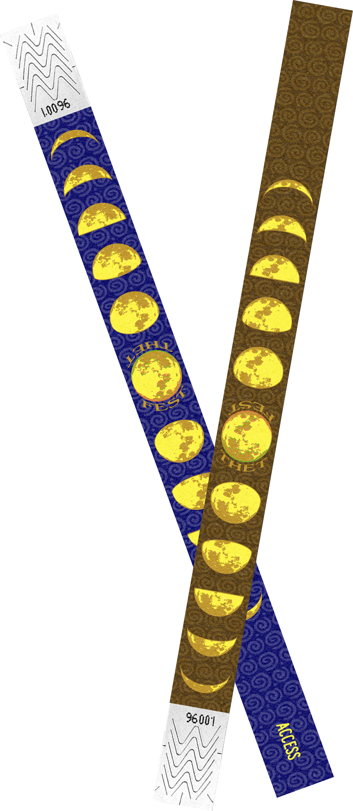

Thetfest
Thetfest was an annual music festival in rural Thetford, Vermont. Although it is no longer held, I aimed to honor the festival by creating a hippie-punk typographic poster (24 × 47 ½"). I then expanded the brand identity to include wristbands and — since there is no cell reception in this backwoods field — a downloadable mobile schedule.

